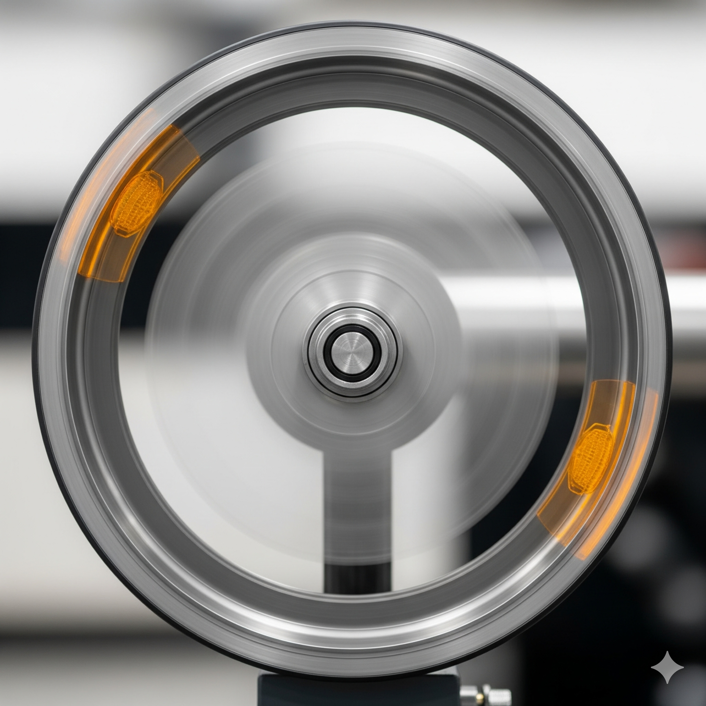
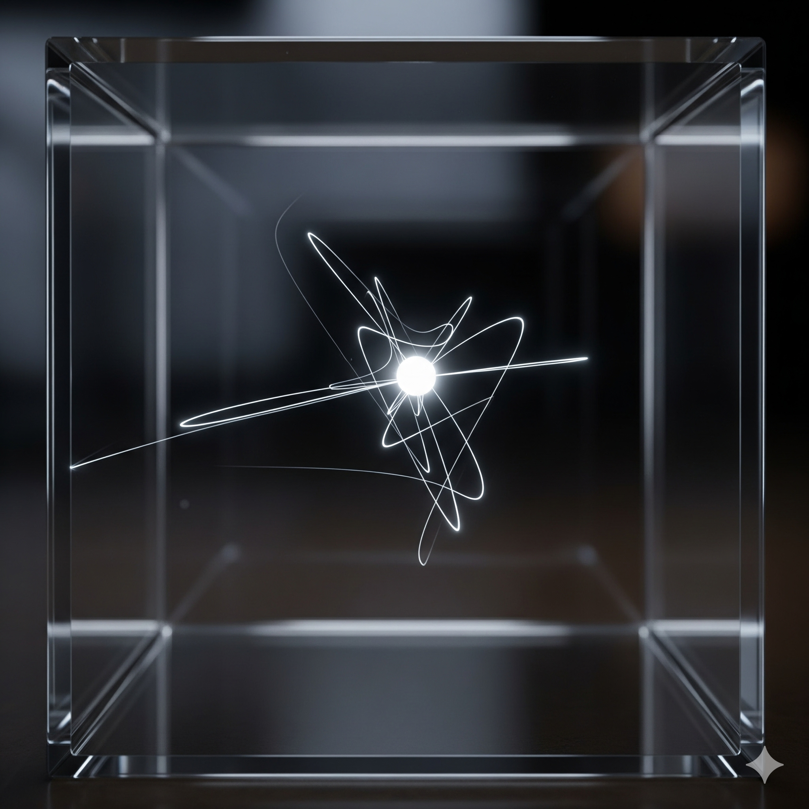

3.1 Describing Motion
Motion is the change in position of an object with respect to time. The type of motion depends on the path the object follows.
Types of Motion with Examples
- Linear (Translational) Motion: Movement in a straight line. Example: A car driving on a straight road, a train on a track.
- Circular/Rotational Motion: Movement around a fixed axis or along a circular path. Example: Spinning top, wheel rotation, hands of a clock. 
-
Oscillatory Motion: Repetitive back-and-forth movement around a central point.
Example: Pendulum, vibrating guitar string, swing.

- Random Motion: Motion in no specific direction or pattern. Example: Gas molecules in a container, pollen grains in water (Brownian motion). 
Combination of Motion Types
Many real-life motions are a combination of different types of motion. Understanding these combinations helps in analyzing complex movement.
-
Bat flying haphazardly while flapping its wings:
Combination: Random motion + Oscillatory motion (wing flapping).
The bat’s overall path is unpredictable (random), while its wings move back and forth in a repeated pattern (oscillatory).
-
Car wheel moving along a straight road:
Combination: Translational motion + Rotational motion.
The car moves straight along the road (translational), while its wheels rotate about their axes (rotational).
-
Pendulum mounted on a moving train:
Combination: Translational motion + Oscillatory motion.
The pendulum swings back and forth (oscillatory) while the train moves along a track (translational).
-
Earth’s movement around the Sun while spinning on its axis:
Combination: Rotational motion + Circular motion.
The Earth rotates on its own axis (rotational) while revolving around the Sun (circular).
-
Projectile motion of a thrown ball with spin:
Combination: Translational motion + Rotational motion.
The ball moves along a curved path (translational) while spinning about its axis (rotational).